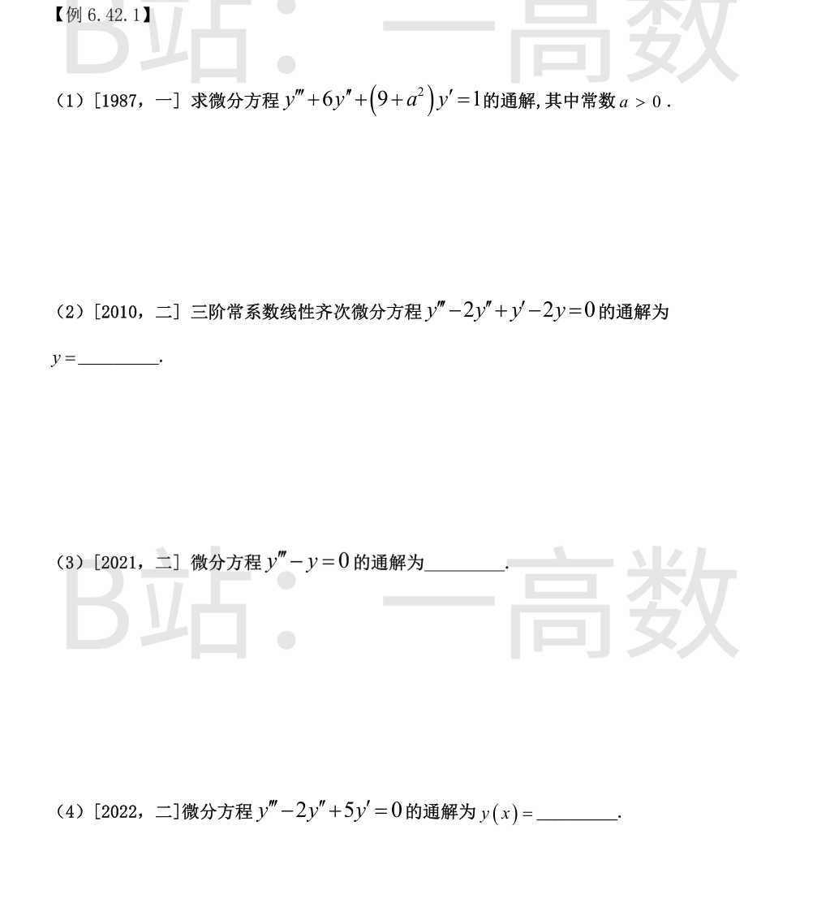
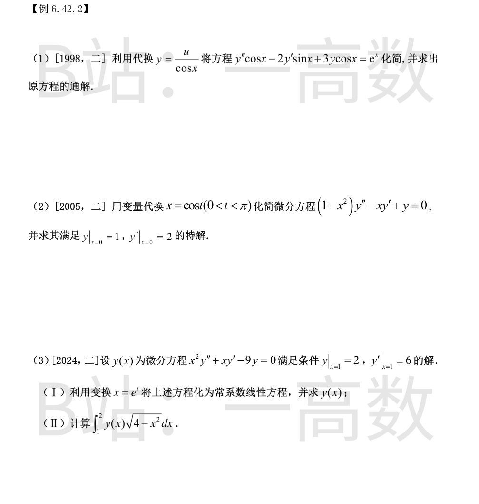

特征方程 $r^3+6r^2+(9+a^2)r=r\left[(r+3)^2+a^2\right]=0$，$r=0,\ -3\pm ai$。
$$Y=C_1+e^{-3x}(C_2\cos ax+C_3\sin ax)$$
右端 1 对应 $\lambda=0$ 单根，设 $y^*=Ax$：代入左端得 $(9+a^2)A=1\Rightarrow A=\dfrac1{9+a^2}$。
$$y=C_1+e^{-3x}(C_2\cos ax+C_3\sin ax)+\frac{x}{9+a^2}$$
$r^3-2r^2+r-2=r^2(r-2)+(r-2)=(r-2)(r^2+1)=0$，$r=2,\ \pm i$。
$$y=C_1e^{2x}+C_2\cos x+C_3\sin x$$
$r^3-1=(r-1)(r^2+r+1)=0$，$r=1,\ -\dfrac12\pm\dfrac{\sqrt3}2i$。
$$y=C_1e^x+e^{-x/2}\left(C_2\cos\frac{\sqrt3}2x+C_3\sin\frac{\sqrt3}2x\right)$$
$r(r^2-2r+5)=0$，$r=0,\ 1\pm2i$。
$$y=C_1+e^x(C_2\cos2x+C_3\sin2x)$$

以 $y=u\sec x$ 计算：
$$y'=(u'+u\tan x)\sec x,\qquad y''=\left[u''+2u'\tan x+u(\sec^2x+\tan^2x)\right]\sec x$$
代入原方程：
$$\cos x\,y''-2\sin x\,y'+3\cos x\,y=u''+2u'\tan x+u(\sec^2x+\tan^2x)-2u'\tan x-2u\tan^2x+3u$$
$$=u''+u(\sec^2x-\tan^2x+3)=u''+4u$$
故化简为
$$u''+4u=e^x$$
$r=\pm2i$；设 $y^*=Ae^x$：$A(1+4)=1\Rightarrow A=\dfrac15$。$u=C_1\cos2x+C_2\sin2x+\dfrac{e^x}5$，所以
$$y=\frac{1}{\cos x}\left(C_1\cos2x+C_2\sin2x+\frac{e^x}5\right)$$
$\dfrac{dy}{dx}=\dfrac{\dot y}{-\sin t}$，
$$\frac{d^2y}{dx^2}=\frac{\dfrac{d}{dt}\left(-\dfrac{\dot y}{\sin t}\right)}{-\sin t}=\frac{\ddot y\sin t-\dot y\cos t}{\sin^3t}$$
代入 $(1-x^2)y''-xy'+y=0$（$1-x^2=\sin^2t,\ x=\cos t$）：
$$\sin^2t\cdot\frac{\ddot y\sin t-\dot y\cos t}{\sin^3t}+\cos t\cdot\frac{\dot y}{\sin t}+y=\ddot y+y=0$$
化简为 $\ddot y+y=0$，$y=C_1\cos t+C_2\sin t=C_1x+C_2\sqrt{1-x^2}$。
$x=0$ 即 $t=\dfrac\pi2$：$y=C_2=1$；$\dfrac{dy}{dx}=\dfrac{-C_1\sin t+C_2\cos t}{-\sin t}$，$t=\dfrac\pi2$ 时为 $C_1=2$。
$$y=2x+\sqrt{1-x^2}$$
(I) $x=e^t$：$\dfrac{dy}{dx}=\dfrac1x\dfrac{dy}{dt}$，$\dfrac{d^2y}{dx^2}=\dfrac1{x^2}\left(\dfrac{d^2y}{dt^2}-\dfrac{dy}{dt}\right)$，代入：
$$x^2y''+xy'-9y=\left(\ddot y-\dot y\right)+\dot y-9y=\ddot y-9y=0$$
$\ddot y-9y=0\Rightarrow y(t)=C_1e^{3t}+C_2e^{-3t}$，即 $y=C_1x^3+C_2x^{-3}$。
$y(1)=2:\ C_1+C_2=2$；$y'=3C_1x^2-3C_2x^{-4}$，$y'(1)=6:\ 3C_1-3C_2=6\Rightarrow C_1=2,\ C_2=0$。
$$y=2x^3$$
(II) 令 $u=4-x^2$（$x=1\to u=3,\ x=2\to u=0$，$x\,dx=-\dfrac{du}2$）：
$$\int_1^2 2x^3\sqrt{4-x^2}\,dx=\int_0^3(4-u)\sqrt u\,du=\left[\frac83u^{3/2}-\frac25u^{5/2}\right]_0^3=8\sqrt3-\frac{18\sqrt3}5=\frac{22\sqrt3}5$$